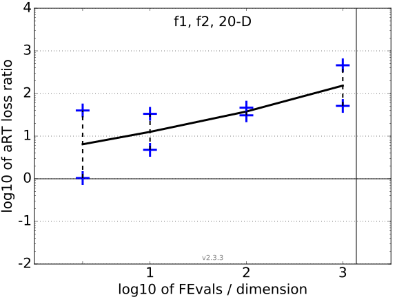
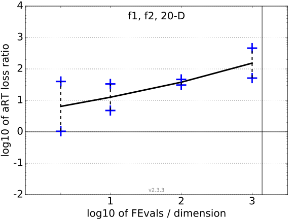

aRT loss ratios
All functions in 5-D and 20-D
f1–f2 in 20-D, maxFE/D=1382
| #FEs/D
| best |
10 % |
25 % |
med |
75 % |
90 % |
| 2 |
1.0 |
1.0 |
1.0 |
21 |
40 |
40 |
| 10 |
4.8 |
4.8 |
4.8 |
19 |
33 |
33 |
| 100 |
31 |
31 |
31 |
39 |
47 |
47 |
| 1e3 |
51 |
51 |
51 |
2.6e2 |
4.6e2 |
4.6e2 |
aRT loss ratio versus the budget in number of f-evaluations divided by dimension. For each given budget FEvals, the target value ft is computed as the best target f-value reached within the budget by the given algorithm. Shown is then the aRT to reach ft for the given algorithm or the budget, if the best algorithm from BBOB 2009 reached a better target within the budget, divided by the aRT of the best algorithm from BBOB 2009 to reach ft. Line: geometric mean. Box-Whisker error bar: 25-75%-ile with median (box), 10-90%-ile (caps), and minimum and maximum aRT loss ratio (points). The vertical line gives the maximal number of function evaluations in a single trial in this function subset. See also the following figure for results on each function subgroup.
Data produced with COCO v2.3.3
Separable functions in 5-D and 20-D
aRT loss ratios (see the previous figure for details). Each cross (+) represents a single function, the line is the geometric mean.
 

{kind=link}
{kind=link}